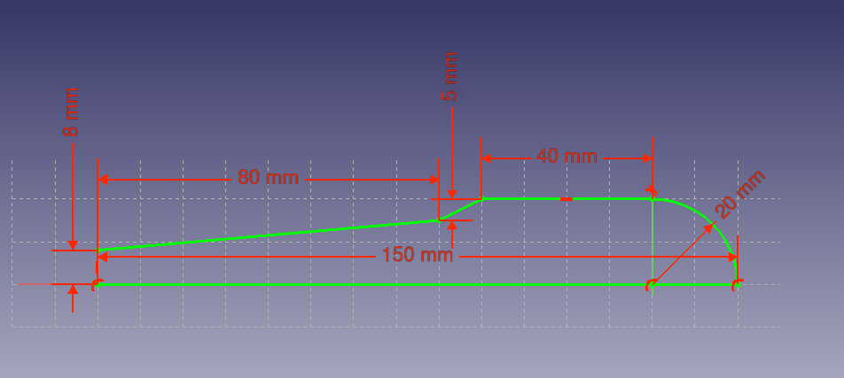
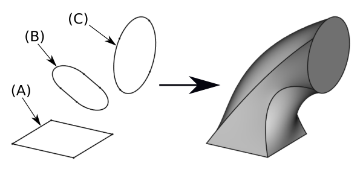

Ronde en vloeiende vormen: revolve, sweep & loftFormes rondes et fluides : révolution, balayage & lissageRound and flowing shapes: revolve, sweep & loft
Met Pad en Pocket trek je vormen recht op of snijd je ze weg. Maar een knop is rond, een kabelgoot volgt een bochtig pad, en een trechter gaat vloeiend van vierkant naar rond. Daarvoor heb je drie krachtige bewerkingen: omwenteling (revolve), additieve pijp (sweep) en additieve loft.Un bouton est rond, une goulotte suit un chemin, un entonnoir passe du carré au rond : révolution, balayage, lissage.Pad and Pocket go straight up or cut away. But a knob is round, a cable channel follows a path, a funnel flows from square to round. Three powerful features: revolve, sweep (additive pipe) and loft.
- een ronde vorm maken met omwenteling (revolve)créer une forme ronde par révolutionmake a round shape with revolve
- een profiel langs een pad slepen (sweep/pijp)balayer un profil le long d'un cheminsweep a profile along a path (pipe)
- vloeiend overgaan tussen profielen met loftfaire un lissage entre profilsblend between profiles with loft
- referentievlakken inzetten om profielen te plaatsenutiliser des plans de référenceuse datum planes to place profiles
Workbench: Part Design. De drie commando's: Omwenteling (revolve), Additieve pijp (sweep) en Additieve loft. Tip: zet profielen en paden op aparte referentievlakken (H14), en gebruik de spatiebalk om een verborgen profiel zichtbaar te maken.Atelier : Part Design. Révolution, Balayage additif, Lissage additif. Profils sur plans de référence (H14) ; Espace pour afficher un profil.Workbench: Part Design. The three commands: Revolution, Additive pipe (sweep) and Additive loft. Put profiles/paths on separate datum planes (H14); use Space to show a hidden profile.
- Revolve: teken een half profiel naast een as → Omwenteling → kies de as en de hoek (360°).Révolution : demi-profil + axe + angle.Revolve: half profile next to an axis → Revolution → axis + angle (360°).
- Sweep: teken een profiel en een pad → Additieve pijp → selecteer het profiel, dan het pad.Balayage : profil + chemin → Balayage additif.Sweep: a profile and a path → Additive pipe → pick profile, then path.
- Loft: teken 2+ profielen op aparte vlakken → Additieve loft → kies het startprofiel, dan sectie toevoegen voor elk volgend profiel.Lissage : 2+ profils → Lissage additif → profil de départ + ajouter section.Loft: 2+ profiles on separate planes → Additive loft → start profile, then add section for each next profile.
01Omwenteling (revolve): ronde delenRévolution : pièces rondesRevolve: round parts
Je zag de omwenteling al kort in H06. Hier de verdieping. Je tekent een halve doorsnede naast een as en laat die ronddraaien: 360° voor een volledig rond deel, of een deel (bv. 90°) voor een segment. Ideaal voor een draaiknop, een asring of een antennevoet. Eén halve schets bepaalt de hele ronde vorm — wijzig de schets en het hele deel verandert mee.Un demi-profil tourne autour d'un axe : 360° (rond complet) ou partiel. Idéal pour un bouton, une bague, un pied d'antenne.You met revolve briefly in H06. Here's more. Draw a half cross-section next to an axis and spin it: 360° for a full round part, or partial for a segment. Perfect for a knob, a ring or an antenna base.

02Additieve pijp (sweep): een profiel langs een padBalayage : un profil le long d'un cheminAdditive pipe (sweep): a profile along a path
Bij een sweep sleep je een profiel (de doorsnede) langs een pad (de route). Het profiel houdt zijn vorm, het pad bepaalt de weg. Zo maak je een kabelgoot die een bocht volgt, een handgreep, of een afgeronde rand langs een grillige rand. Teken het profiel en het pad bij voorkeur op aparte vlakken en selecteer eerst het profiel, dan het pad.Un profil suit un chemin. Pour une goulotte, une poignée, un bord arrondi. Profil puis chemin.A sweep drags a profile (the cross-section) along a path. The profile keeps its shape, the path sets the route — a cable channel round a bend, a handle, a rounded edge. Pick profile first, then path.

03Additieve loft: vloeiend tussen profielenLissage : entre profilsAdditive loft: flowing between profiles
Een loft maakt een vloeiende overgang tussen twee of meer profielen die op verschillende vlakken liggen. FreeCAD "spant" een huid over de profielen. Zo ga je van een vierkante voet naar een ronde tuit — denk aan een trechter of een hoorn. Plaats de profielen op aparte referentievlakken (H14); staat een profiel verborgen, maak het zichtbaar met de spatiebalk voor je het selecteert.Le lissage relie 2+ profils sur des plans différents : du carré au rond (entonnoir). Plans de référence (H14) ; Espace pour afficher un profil.A loft blends between two or more profiles on different planes — from a square base to a round top (a funnel or horn). Put profiles on datum planes (H14); use Space to reveal a hidden profile before selecting it.

04Verwant: de schroeflijn (helix)Apparenté : l'héliceRelated: the helix
Wie verder wil: met een schroeflijn (helix) als pad maak je schroefdraad of een veervorm — een profiel dat spiraalsgewijs omhoog loopt. Dat is een sweep langs een spiraalvormig pad. Voor de meeste behuizingsklussen heb je het niet nodig, maar het bestaat — handig voor zelfgemaakte schroefdraad of een kabelwartel.Avec une hélice comme chemin : filetage ou ressort. Pas indispensable pour les boîtiers, mais utile.Going further: with a helix as the path you make threads or a spring — a profile spiralling upward. Rarely needed for enclosures, but it exists — handy for custom threads or a cable gland.
Drie manieren om verder te gaan dan recht ophogen: revolve draait een profiel rond een as, sweep sleept een profiel langs een pad, en loft gaat vloeiend over tussen meerdere profielen.Révolution = tourner ; balayage = suivre un chemin ; lissage = relier des profils.Revolve spins a profile around an axis, sweep drags a profile along a path, and loft blends between several profiles.
Sweep en loft werken het best als je de profielen op aparte referentievlakken tekent (H14). Staat een profiel verborgen achter een ander? Selecteer het in de boom en druk spatie om het te tonen. En let op de volgorde: bij een sweep eerst het profiel, dan het pad.Profils sur plans de référence (H14) ; Espace pour afficher ; ordre : profil puis chemin.Sweep and loft work best with profiles on separate datum planes (H14). Hidden profile? Select it in the tree and press Space. Mind the order: for a sweep, profile first, then path.
Een draaiknop voor je afstemming maak je met revolve; een kabelgoot die netjes om de printplaat loopt met sweep; een overgangsstuk van een vierkante behuizingsopening naar een ronde connector met loft. Allemaal radio-onderdelen die je met deze drie bewerkingen zelf tekent.Bouton (révolution), goulotte (balayage), raccord carré→rond (lissage).A tuning knob with revolve; a cable channel round the PCB with sweep; a transition from a square opening to a round connector with loft.
Maak een eenvoudige draaiknop met revolve: teken een half profiel (een schijf met een afgeronde bovenrand) naast een as en draai het 360° rond. Wil je meer? Maak dan een kabelgootje met een sweep: een U-profiel langs een gebogen pad. Denk meteen aan printbaarheid (H16): hoe oriënteer je de knop op de bouwplaat?Faites un bouton (révolution 360°) ; en option une goulotte (balayage). Pensez à l'orientation (H16).Make a simple knob with revolve (a half profile spun 360°). Want more? A cable channel with a sweep (a U-profile along a curved path). Mind printability (H16): how do you orient the knob?
05Veelgemaakte foutenErreurs fréquentesCommon mistakes
- Open profiel. Revolve, sweep en loft willen een gesloten profiel als basis. Sluit je schets.Profil ouvert. Fermez le croquis.Open profile. These features need a closed profile. Close your sketch.
- Loft-profielen op hetzelfde vlak. Een loft heeft profielen op verschillende vlakken nodig om "diepte" te krijgen.Profils coplanaires. Mettez-les sur des plans différents.Loft profiles on one plane. A loft needs profiles on different planes.
- Verkeerde selectievolgorde bij sweep. Eerst het profiel, dan het pad — niet omgekeerd.Mauvais ordre. Profil puis chemin.Wrong sweep order. Profile first, then path — not the reverse.
- Verborgen profiel niet getoond. Je kunt het niet selecteren. Druk eerst spatie om het zichtbaar te maken.Profil masqué. Espace pour l'afficher.Hidden profile. You can't select it — press Space to show it first.
Elke vormgever heeft een aftrekkende variant die materiaal wegneemt: Groove (uitsparing via omwenteling — een ronde groef rond een as), subtractieve pijp (een kanaal langs een pad uitsnijden) en subtractieve loft. Zelfde werkwijze als de additieve versie, maar ze verwijderen materiaal — handig voor een groef rond een knop of een kanaal in de behuizing.Chaque outil a une version soustractive : Gorge (révolution), balayage et lissage soustractifs. Même méthode, on retire la matière.Each shaper has a subtractive twin: Groove (a cutting revolve), subtractive pipe and subtractive loft. Same method, but they remove material.
06Samenvatting
Naast Pad en Pocket heb je drie vormgevers voor ronde en vloeiende delen. Omwenteling (revolve) draait een half profiel rond een as (knoppen, ringen). Additieve pijp (sweep) sleept een profiel langs een pad (kabelgoten, randen). Additieve loft verbindt meerdere profielen tot een vloeiende overgang (trechters). Plaats profielen op aparte referentievlakken (H14), let op gesloten profielen en de juiste selectievolgorde, en denk aan de printoriëntatie (H16).Trois outils : révolution (rond), balayage (le long d'un chemin), lissage (entre profils). Plans de référence, profils fermés, bon ordre, orientation.Beyond Pad and Pocket, three shapers: revolve (round parts), sweep (along a path), loft (blend between profiles). Use datum planes (H14), keep profiles closed, mind the order, and think about print orientation (H16).
- Revolve = draaien rond een as (rond deel uit een half profiel).Révolution = tourner autour d'un axe.Revolve = spin around an axis.
- Sweep = profiel volgt een pad; loft = overgang tussen profielen.Balayage = suivre un chemin ; lissage = relier des profils.Sweep = profile follows a path; loft = blend between profiles.
- Profielen op aparte vlakken (H14); spatie toont een verborgen profiel.Profils sur plans séparés ; Espace affiche.Profiles on separate planes (H14); Space shows a hidden one.